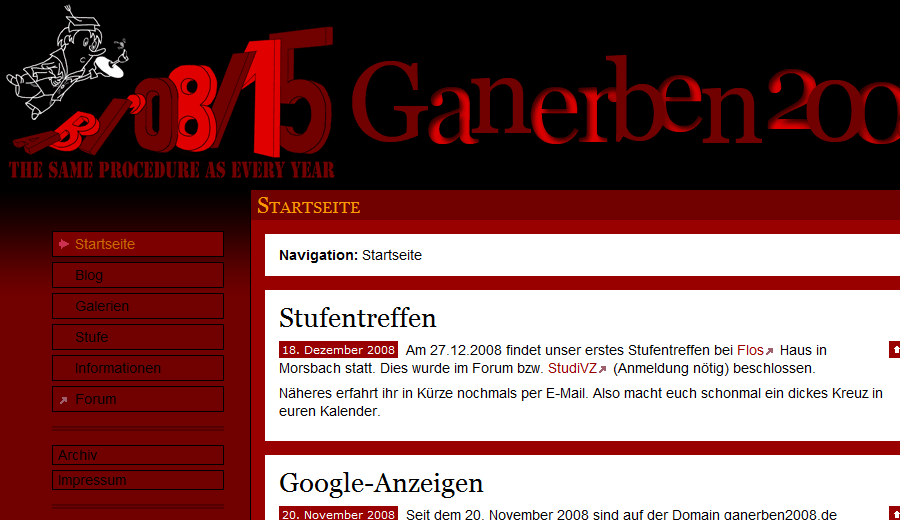

Hierbei handelt es sich um die Website meines Abiturjahrgangs vom Ganerben-Gymnasium Künzelsau. Die Site beinhaltet ein Blog, ein Forum und eine nette Bildergalerie mit den wichtigsten Fotos der Abipartys und sonstigen Veranstaltungen. Außerdem gibt es eine Seite für jeden meiner ehemaligen Mitschüler.
Zunächst war alles bis aufs Forum händisch mit PHP programmiert. Dann habe ich jedoch im März 2008 auf Textile umgestellt, um die Datensätze etwas flexibler handhaben zu können. Das Forum läuft vom Start an mit der leichtgewichtigen Forensoftware PunBB.